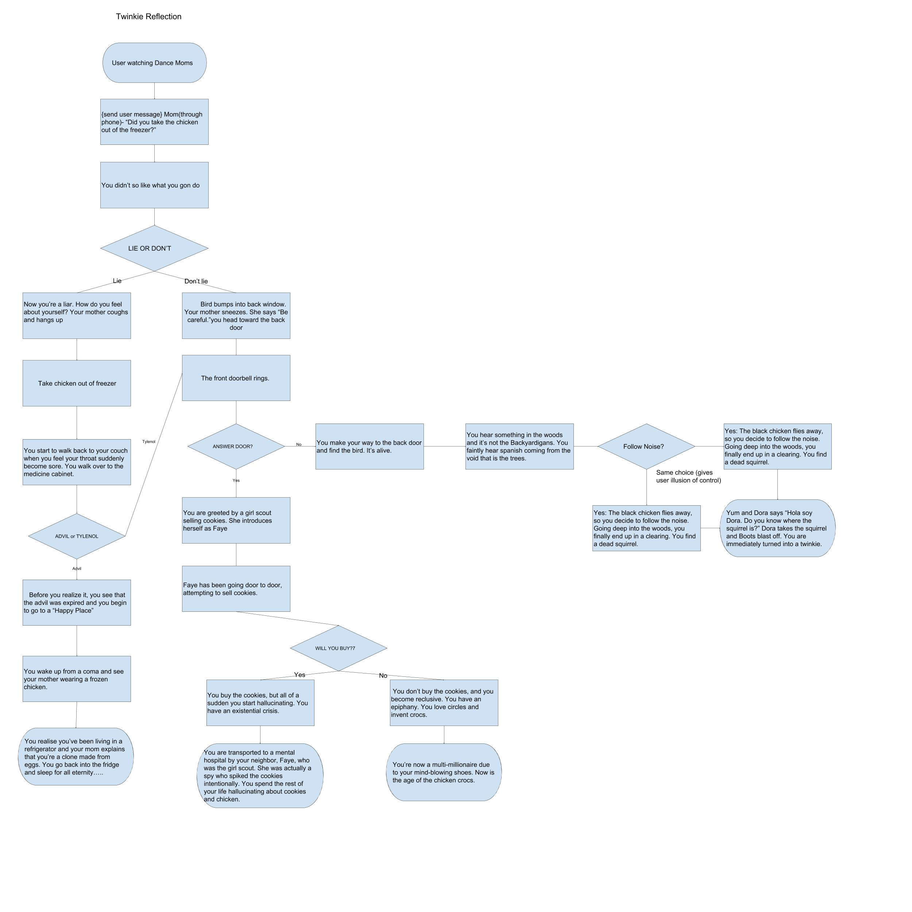

The game "Escape" is about a girl who gets trapped in a dungeon full of monsters. The point of the game is to go through the doors and survive. The scoring system will go up every single time a monster is killed. The monsters that attack the playere will attack randomly. The game gets more difficult after you defeat each monster. The user loses when their health is depleted.
I made this specific game because I wanted something scary, but it turned out to be more like a story-based rpg. However, it still achieves what I was going for. My game was inspired by this horror game that used doors and monsters. What I though went well was the characters and the actual gameplay. One obstacle was the attack sprites being inconsistent. In the end, I figured out a way for the sprites to all act the same way, and do what they are supposed to do. Another obstacle was deciding how hard the game should be. The game seemed to hard sometimes, but at other times, seemed to easy. I finally found the right combination of health and attacks to balance the game. If I more time or resources, I would most definitely change the sprites and backgrounds to be more high-quality. Most of all, I would have changed the attack patterns and overall gameplay.

This piece of code is an algorithm because contains different types of blocks, and is a step-by-step procedure. For example, one thing happens and so on. This particular code makes the fox sprite visible when the backdrop switches to backdrop 1. This is also prompts the heath bar to show up. The next two combinations make the sprite shake and die if its health is depleted.

Twinkie Reflection is a story about YOU as the main character, dealing with seemingly trivial things like taking the chicken out of the freezer. However, once you start making decisions, the story will drastically differ depending on what choices you make. This story is wild, and will end in unexpected ways. The choices you make will either lead you to talking to a girl scout, or finding out the real meaning of the frozen chicken, and many other routes.
We used incremental developmental processes when we sliced up parts of the story into different functions. The different functions represented different scenes. Iterative processes can be shown through how we went back and fixed code if necessary. Iterative means to repeat over and over, and that was what we had to do constantly to check our code.Some issues my partner and I encountered was mainly stylistic issues. We faced a problem with the text not starting right at the beginning, and starting with an extra space. That threw off the aesthetic, and we figured out that we put the /n(new line code) in the wrong place. We also faced the problem of differentiation between characters speaking. We solved this by seperating all dialogue with spaces. Opportunites that we took advantage of were the symbols on the keyboard, which were used to convey shock or emotions.
The organization of the scenes into functions is an example of procedural abstraction because don't really know how the story is being printed, but we know the print function is supposed to do that. Procedural abstraction is defined as a model of what we want a subprogram to do, but not how. Like in Python, we write our code because we know what it is supposed to do, but we don't know how the program does it. This makes the program simpler to understand, by lowering the complexity. Some advantages of abstracting my scenes into functions is I'm not required to understand how my functions work, and the computer/program does all the work for me. This is more effiecient and less time consuming.
I liked Jim's First Love because it was a love story, and that was different than everyone else's stories. It combined romance and comedy in one story, albeit not being finished yet. With the short glimpse that I got of the story, I was hooked because it was an unconventional love story.